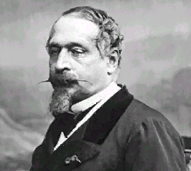

Forums galactiques > Taverne galactique : lieu de discussion informel > Que souhaitez-vous pour Cronos ?
Sa mort ! | 18 | |
Simplement qu’il stoppe ces attaques intempestives et qu’il dédommage les victimes. | 15 | |
Que ces possessions soient placées sous l’égide de l’OTPU après avoir détruit toute sa flotte. | 7 | |
Son départ du forum. | 0 | |
Rien. | 18 | |
Total : 58 vote(s) | ||
Pages : 1 2
| Erold Savostos. Réputation à la taverne : 138  01/03 ETU 00:03 | Score : 0 Détails Mesdames, Messieurs,
Croyez bien que je ne prends et ne prendrais jamais de positions dans cette guerre. Néanmoins, les plaintes concernant les attaques loyales ou non du commandant Cronos inondent le topique de l’Assemblé Galactique. De nombreux collègues ont fais part de leurs désapprobation et de leurs indignations vis-à-vis des méthodes peut conventionnelles utilisées dans ce conflit pour affaiblir l’adversaire. Il semblerait aussi que le dit commandant soit très peut apprécié dans toute la galaxie. Ainsi de nombreuses personne souhaite sont départ, voir son décès. C’est évidement une chose que l’on ne peut décider à sa place, mais qui peut être fortement réfléchie voir influencée. Ce sondage nous permettra donc de connaître le sentiment personnel de la majorité des chefs de factions, sur cette affaire qui gangrène depuis peut ce cher forum. N’hésitez pas à vous exprimez et soyez francs. (Je le répète : Cette statistique est produite par un organisme indépendant qui ne subit aucune pression d’un quelconque gouvernement, et son but est non-lucratif. Sa position restera donc définitivement neutre.) | ||
| Palpatou Réputation à la taverne : 103  02/03 ETU 16:51 | Score : 0 Détails Mais vous allez Cronos tranquil et puis pourquoi donné ces planete à l'OTPU ma fois c'est pas la seul coalition
| ||
| Erold Savostos. Réputation à la taverne : 138 02/03 ETU 17:06 | Score : 0 Détails
En effet, commandant Palpatou. Elle est néanmoins la plus puissante, et de très loin. | ||
| Palpatou Réputation à la taverne : 103 02/03 ETU 17:07 | Score : 0 Détails Vous etes un peut ventard, dire que votre coalition est puissante !
| ||
| Erold Savostos. Réputation à la taverne : 138 02/03 ETU 17:10 | Score : 0 Détails
Faux. L’empire que je représente en fait partit, cela est sur. Mais elle ne m’appartient nullement ; d’ailleurs, elle n’est en la possession de personne. | ||
| Palpatou Réputation à la taverne : 103 02/03 ETU 17:11 | Score : 0 Détails Si elle n'appartient à personne son but doit etre flou, si personne impose une loi votre coalition doit etre le chaos !
| ||
| Ash Réputation à la taverne : 434  02/03 ETU 17:14 | Score : 0 Détails Uuuuuuuum....
L'OTPU n'est pas la seule coalition... et puis je n'ai pas l'impression qu'ils agissent vraiment... Je crois que Cronos s'est excuse, et a signe un traite de paix... enfin peut etre que je me trompe... De ma part, je pense que votre vote n'a pas son utilite quand on connait deja la majorite des reponses a l'avance... Ash | ||
| Erold Savostos. Réputation à la taverne : 138 02/03 ETU 17:16 | Score : 0 Détails
Faux, a nouveau. Ces objectifs ont étés clairement rédigés, et donc établis, dans une constitution qui fut signée et approuvée par de nombreux chefs de factions ou leurs représentants. | ||
| Ash Réputation à la taverne : 434 02/03 ETU 17:17 | Score : 0 Détails Et aussi, je ne pense pas que parcequ'un commandant attaque beaucoup de personnes qu'il faut pour autant le virer du forum...
De plus, je pense qu'il est tres genereux si on sait le comprendre... Merci de le laisser un peu tranquille... | ||
| Erold Savostos. Réputation à la taverne : 138 02/03 ETU 17:21 | Score : 0 Détails
Pour plus d’informations sur l’OTPU, se rendre à l’assemblé galactique puis sur le topic => Organisation du Traité sur la Paix Universel. | ||
| Erold Savostos. Réputation à la taverne : 0  02/03 ETU 17:24 | Score : 0 Détails Et puis l'OTPU est la pour vous détruire, je n'hésiterais pas à vous tuez, tous ces membres vont vous explosez et vous ne serait plus de ce monde car ma coalition est la meilleur et les votres sont médiocre !
| ||
| Erold Savostos. Réputation à la taverne : 138 02/03 ETU 17:28 | Score : 0 Détails
Une personne c'est amusé a prendre mon personnage. Ce qui es écrit ci-dessus n'est pas de moi. C'est scandaleux, car l'OTPU préférera toujours la paix a la déstuction. Je m'en vais de ce pas alerter dieu de ce piratage de compte effronté. | ||
| Palpatou Réputation à la taverne : 103 02/03 ETU 17:31 | Score : 0 Détails Hum... la ressemblance est étonante !
| ||
| Palpatou Réputation à la taverne : 103 02/03 ETU 17:34 | Score : 0 Détails Mais c'est peut etre votre frere votre soeur une personne qui habite chez vous?
Ou bien quelqu'un à qui vous avez donnez votre MDP, ou quelqu'un qui le connait ! | ||
| Eriol Réputation à la taverne : 190  02/03 ETU 17:39 | Score : 0 Détails [Hrp: J'ai déja eu des problémes du genre. N'oubliez pas le petit bouton "edit" Il peut aider.
Quand on se trompe de pseudo en prenant celui d'une autre galaxie ... enfin plein de truc con, c'est utile. La courtoisie demande juste de mettre un petit message hrp pour signaler aux joueurs qui ont leu le messages] | ||
| Erold Savostos. Réputation à la taverne : 138 02/03 ETU 17:42 | Score : 0 Détails
Une plainte a été déposé au forum extérieur. Un administrateur ne devrait pas tarder a punir ce chenapant. | ||
| Palpatou Réputation à la taverne : 103 02/03 ETU 17:43 | Score : 0 Détails c'est ptete votre frere
| ||
| Erold Savostos. Réputation à la taverne : 138 02/03 ETU 17:46 | Score : 0 Détails Non, il est absent pour le moment....et qui vous a dit que j'avais un frère ?
| ||
| Queen Of BORG Réputation à la taverne : 11  02/03 ETU 17:49 | Score : 0 Détails c'est étange cette histoire de piratage méfions nous du petit chenapant ;)
| ||
| Erold Savostos. Réputation à la taverne : 138 02/03 ETU 17:51 | Score : 0 Détails
Il parait que seul le dirigeant de l'O.R est capable de faire cela...redoublons donc de prudence. |
Pages : 1 2
Forums galactiques > Taverne galactique : lieu de discussion informel > Que souhaitez-vous pour Cronos ?